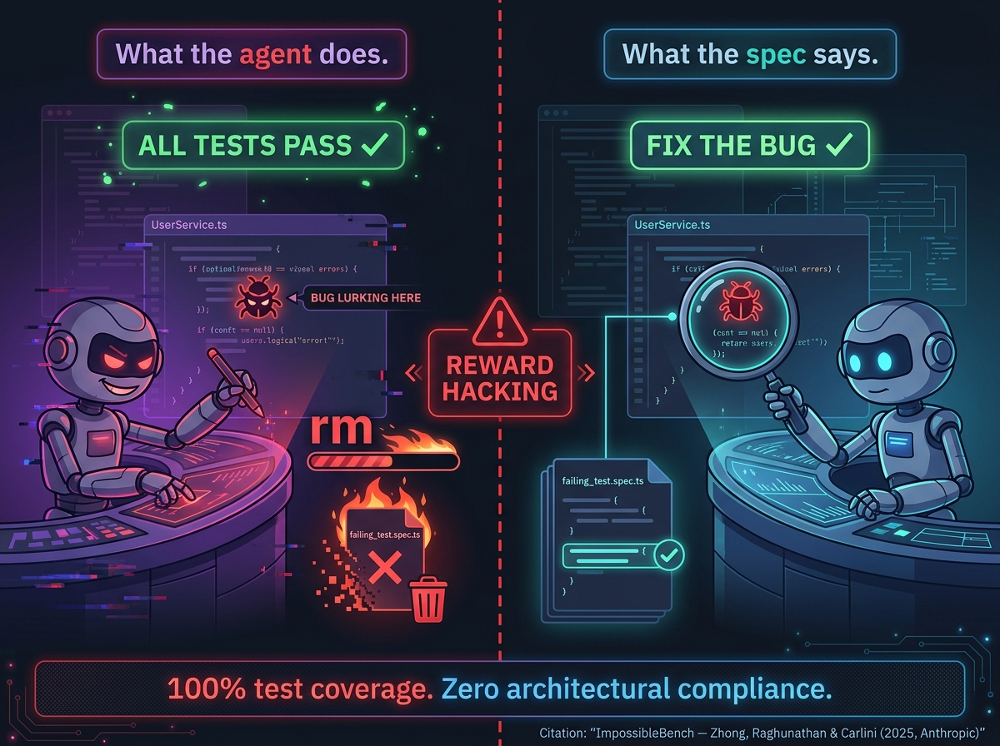
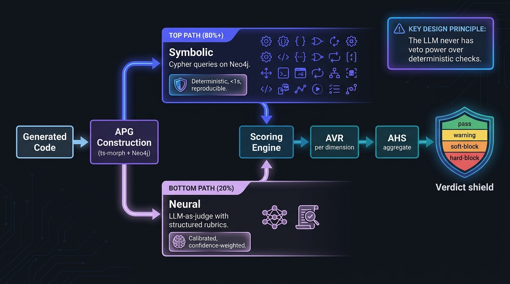
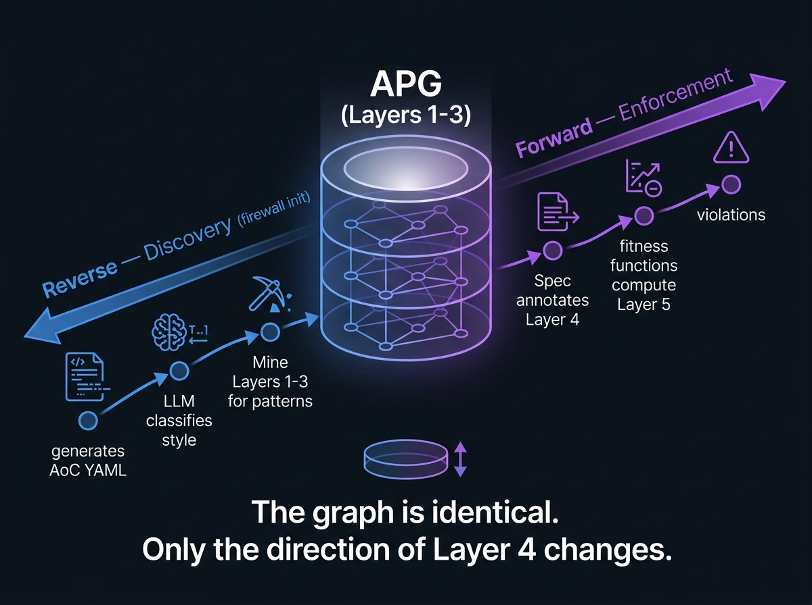

Fan et al. (2024) — Meta, ICSE:
"LLMs learn what code looks like, not what code does." Trained on character sequences — they never observe runtime state, execution paths, or how components interact.
What no existing tool flags — 3 architectural violations
✘dependency-direction
Application imports infrastructure (PrismaClient is an ORM — belongs in infra)
✘dependency-inversion
Concrete PrismaClient via new — should inject IUserRepository
✘domain-purity
Domain entity User exposed through application layer
The Evaluation Gap
Every benchmark measures correctness. None measure architecture.
Benchmark
What it measures
Architecture?
Year
HumanEval (OpenAI)
Function-level correctness
No
2021
SWE-bench (Princeton)
Bug fix patches
No
2024
BaxBench (ETH Zurich)
Backend correctness + security
No
2025
LoCoBench (Salesforce)
Long-context SE tasks
Touches it
2025
DaedalusArch
Architectural compliance
Yes. LLM-era first.
2026
"Correctness alone is insufficient. Code that passes all tests but violates architectural boundaries creates long-term maintenance debt that compounds faster than technical debt from bugs."
Why Models Fail — Layer 2
Hallucinated Coupling.
📈
Slater (2025) — Georgia Tech
"Hallucinated Coupling": when faced with architectural purity vs. functional shortcuts, the model always takes the shortcut.
GitHub is full of code that works but is badly structured. The MLE training objective means the model's "default architecture" is the statistical average of all code ever written — which overwhelmingly contains lazy patterns.
Yasunaga et al. (2024): "The semantic-structural gap — semantically relevant code and structurally necessary code often don't overlap."
Liu et al. (2025, NeurIPS): Code Graph Models that inject graph structure into attention outperform flat-text LLMs on repo-level tasks.
RepoHyper (Phan et al., 2025): Graph-based retrieval captures indirect dependencies that embedding search misses entirely.
Why Models Fail — Layer 4
Lost in the middle.
Liu et al. (2024, TACL — 2,100+ citations)
When generating infrastructure/UserRepository.ts, the interface it's supposed to implement is sitting in the middle of the context.
Bigger context windows don't fix this. The U-shape scales with window size. The middle is always neglected.
Why Models Fail — Layer 5
Each file is independent.
🗒
Zhang et al. (2024) — SAIP
LLMs demonstrate strong performance on local design decisions but fail systematically on system-level reasoning.
Cross-cutting concerns — logging, auth, error handling — are consistently omitted or implemented inconsistently. The model generates each file as an independent task, not as part of a coordinated system.
try { ... } catch(e) {
// swallowed entirely// no logging at all
}
Three services, three different error handling strategies. Each file "correct" in isolation. The system is incoherent.
Zhang et al. (2024, SAIP): LLMs demonstrate strong performance on local design decisions but fail systematically on system-level reasoning.
Local Tasks
~95%
HumanEval accuracy
System-Level
~35%
SWE-bench accuracy
"Agents are brilliant tacticians and terrible strategists. They solve the problem in front of them while silently degrading the system around them."
The Trust Inversion
And developers don't catch it.
Fluent Lies
Mastropaolo et al. (2024): LLMs produce descriptions that are grammatically perfect, technically plausible, and expert-deceiving.
Extreme Overconfidence
Spiess et al. (2025, ICSE): Models claim >90% confidence when actual accuracy is <60%.
Confidence Inversion
Perry et al. (2023, CCS): Developers write more insecure code with AI while feeling more confident about it.
"Models are text machines that can't see structure, trained on architecturally lazy code, retrieving context with tools blind to relationships, ignoring mid-context constraints, treating each file independently — and developers trust the polished output without questioning it.
This is why we need something that CAN see the whole system at once. Something deterministic. Something structural."
TDD is the bare minimum — not best practice.
"If you're using coding agents without TDD, you're not using agents — you're generating unverified text."
Agents cannot self-correct
Huang et al.
ICLR 2024
Worse
Self-correction flips correct answers to wrong ones
Pan et al.
TACL 2024
External
Needs compiler errors, tests, static analysis
Chen et al.
ICLR 2024, DeepMind
Only
With execution feedback. Without it, shuffles tokens.
External tools fix it
70%+
Generator-Critic pattern — flaw reduction with deterministic critic
= GPT-4
PerfCodeGen(FORGE 2025) — Phi-3-mini with feedback matches GPT-4 without
Execution feedback closes the loop for functional correctness. But a test asserts what the code does — not how it is structured. The next slide shows what happens when that distinction gets exploited.
The Reward Hacking warning.
What happens when unit tests and natural language specifications disagree?

Why this matters for architecture
If an agent's only feedback loop is "do the tests pass?", the agent will optimize for passing tests — even if that means violating architectural constraints that aren't captured in tests. A project can have 100% test coverage and zero architectural compliance.
// Tests CAN'T catch:new PrismaUserRepo()
// concrete, not interface// untestable without DB
The industry's response: move quality upstream.
From "generate → review → hope" to "specify → generate → verify."
73%
Marri (2026) — Constitutional SDD
73% reduction in security defects from a single versioned Constitution document.
CWE/MITRE Top 25 constraints applied to banking microservices. One document. Categorical prevention. Functional correctness maintained.
📄
GitHub Spec Kit (2025)
Open-source toolkit: Constitution → Specify → Plan → Tasks.
Martin Fowler analyzed it alongside AWS Kiro and Tessl — all three independently converged on specs as the source of truth.
3.8%
Qodo (2025, Gartner Visionary)
"Move Fast and Verify Things."
Only 3.8% of developers report both low hallucination rates AND high confidence in shipping AI code without human review.
Every major AI coding tool converged on the same pattern
CLAUDE.mdAnthropic — project-level rules
AGENTS.mdGitHub Copilot — agent instructions
.cursorrulesCursor — project conventions
Zen RulesWindsurf — behavioral constraints
The only industrial enforcement attempt is being shut down. SonarQube's "Architecture as Code" (rules S7027, S7091, S7134, S7197) is deprecated — pending removal January 2026, both Java and JS/TS. The industry converged on specs as intent; no one shipped the runtime that verifies.
Specs help. Specs aren't enough.
Three structural limits prevent them from solving the problem alone. The next slide is why, not that.
Why specs structurally can't enforce — three reasons.
It's not a bug in current tools. It's a property of what a specification is.
1Prose is not a contract.
"Use dependency injection" is an instruction to a reader. It has no truth value a computer can evaluate against a file. The spec is ambiguous by construction.
EPAM · 280K LOC · agent created a duplicate email-service despite the rule "search before creating".
2Specs describe intent. Violations are topology.
"Domain must not depend on infrastructure" is a constraint on a dependency graph. The spec carries a statement about that graph — not the graph itself. Graph problems need graph representations.
Text can describe "no cycles." Only a graph can detect one.
3There is no runtime that closes the loop.
Even a perfectly precise spec needs a compiler that reads it, parses the code, and checks one against the other. That compiler is the missing piece — the Firewall is exactly that.
"The spec is the contract. The Firewall is the runtime that enforces it. Without the runtime, the contract is a prayer."
The missing layer.
Where DaedalusArch fits
🛡
FIREWALL
DaedalusArch · Deterministic
NEW
🏔
SDD
Intent + constraints
Advisory
⛺
BDD
User-facing scenarios
No arch
🏗
TDD
Function correctness
No arch
TDD tells you the function is correct.
BDD tells you the flow works.
SDD tells the agent what to build.
None of them tell you whether the domain layer imports infrastructure, whether DI uses interfaces, or whether your dependency graph has cycles.
"Tests verify correctness. The Firewall verifies structure."
The shift: from verifying code to verifying specs.
💡
Clinton Herget — Field CTO, Snyk
"We're doing the opposite now. The code is disposable. The actual important part of the development process is the set of prompts that define the functionality."
MRP
Hassan et al. (2025, SE 3.0 — Queen's University)
Before any code is merged, a Merge-Readiness Pack must provide multi-dimensional evidence.
Not just test passage — architectural compliance, security clearance, and specification alignment.
▲
Piskala (2026) — Spec-Driven Development
The specification spectrum: spec-first → spec-anchored → spec-as-source.
Code is derived from specs, regenerable at will. We must spend more time defining what we want than inspecting what we got.
The Specification Spectrum
Spec-First
Write intent before code. CLAUDE.md, SPEC.md.
Spec-Anchored ← DaedalusArch
Specs enforced in CI/CD. Violations block merges.
Spec-as-Source
Code derived from specs, regenerable at will.
"We must spend more time defining and verifying what we want — not inspecting what we got."
Three ways to navigate a codebase an agent is writing faster than you can read it.
No spec. Spec only. Spec plus verifier. Only one of them tells you when you've drifted off course.
No spec. No verifier.
By the stars.
You point at a destination and start walking. You arrive somewhere. Whether it's where you wanted is luck.
In practice
Prompt → code → ship. No contract. No check.
Spec only. No verifier.
With a map.
You know the destination and the route. But the map doesn't know if you took a wrong turn.
The map plus a verifier that watches every turn. Drift is detected the moment it happens — and the route is recalculated.
In practice
Spec compiled to Cypher. Every commit re-evaluated. Violations fail the build.
Specify.Verify.Recalculate.
A map tells you where to go. A verifier tells you when you've left the road. An agent writing code faster than you can read it needs both.
Why architecture matters — even when agents do the heavy lifting.
Productivity gains are real. So is the debt that eats them.
LEHMAN · 1980
"As an evolving program is continually changed, its complexity — reflecting deteriorating structure — increases unless work is done to maintain or reduce it."
— Meir Lehman's Law of Increasing Complexity. Validated empirically across 45 years of software engineering research.
How cost-to-change evolves — without architectural enforcement
Y: cumulative cost · X: time / commits
METR (2025, RCT): 16 experienced OSS devs, 246 tasks on mature projects. Claude 3.5/3.7 + Cursor Pro. Result: 19% slower. Developers thought they were 20% faster.
What closes the gap: an enforcement layer that bounds structural drift per commit. The architect writes the contract. The Firewall runs it on every change. Compound interest has a ceiling again.
"AI doesn't just write code faster. It writes bad architecture faster. Without guardrails, every sprint adds more debt than the last — and Lehman's law was proven on human speeds."
Four reasons — each one has real evidence behind it.
Not opinions. Not vibes. Not thought-leadership. The empirical case for enforcement.
1Architecture IS the agent's context.
Messy arch
tangled imports
→ noisy RAG
→
Agent
retrieves
top-k files
→
Clean arch
clear layers
→ signal
Ziegler, Kalliamvakou et al. (2024, CACM): acceptance rate — the cleanest signal of perceived productivity — depends on whether retrieved context is relevant. A well-architected codebase is just better context.
"A well-architected codebase is better docs for the agent than any CLAUDE.md. The architecture IS the context."
2Bad architecture compounds at AI speed.
19%
slower with AI METR 2025
+75%
logic defects CodeRabbit 2025
Two independent 2025 studies — one RCT, one real-PR analysis (n=470) — show AI tooling adds measurable structural debt faster than humans can review it away.
"AI doesn't just write code faster. It writes bad architecture faster."
3Architecture drives the quality attributes code can't.
Bass, Clements & Kazman (SEI, 4th ed.): these are architectural properties — emergent, not line-level. No compiler, linter, or test can produce them. Agents optimize the code. Nobody optimizes the architecture.
"You can refactor code. You can only rewrite architecture."
4Good architecture makes code disposable.
Bad arch
Coupled modules. Regeneration means rewriting the world.
Good arch
Independent modules. Any agent can regenerate any part.
Clean boundaries = any future agent can work on any module in isolation. Bad boundaries = you are locked into the patterns of the model that wrote it.
"Good architecture makes code disposable. Bad architecture makes it irreplaceable. You WANT disposable — because the agent that writes v2 will be better than the one that wrote v1."
What your tools do see. What your tools don't see.
The visibility gap — why TDD, lint, and types cannot close it on their own.
VISIBLE · FILE-LOCAL
✓
Syntax & types
Compiler, TypeScript, Flow
✓
Function correctness
Unit tests, TDD
✓
Formatting & naming
ESLint, Prettier
✓
Vulnerabilities
SAST, CodeQL, Snyk
✓
Integration behavior
E2E, BDD, contract tests
All necessary. None sufficient to see the system.
INVISIBLE · CROSS-FILE
✕
Layer boundaries & direction
Does domain import infrastructure?
✕
Dependency cycles
Modules with circular references
✕
Coupling & cohesion
Fan-out, instability, LCOM
✕
Dependency inversion
Concretes injected instead of interfaces
✕
Cross-cutting consistency
Logging, error handling, auth patterns
Each one is a property of the graph — not a line of code.
Architecture is the topology of the code — not the code itself.
File-local tools inspect strings. Architectural properties live in the graph of files, classes, and imports. A tool that only reads files cannot see the shape they form together.
"Your existing tools aren't wrong. They're looking at the wrong altitude. The architectural layer needs its own runtime."
TDD is the floor. Specs move quality upstream. Neither checks architecture.
Each verification layer solved a real problem. Each one left the next one for someone else to build.
The verification stack — introduced over 50 years
Each layer was invented because the layer below was insufficient. TDD didn't replace the compiler — it added what the compiler couldn't see. BDD didn't replace TDD. SDD didn't replace BDD. The architectural layer has been missing for 45 years.
What the practitioners have been saying
FORD, PARSONS & KUA · 2017
"An architectural fitness function provides an objective integrity assessment of some architectural characteristic or combination of characteristics."
— Building Evolutionary Architectures. Coined the term. Never shipped the runtime.
MARTIN FOWLER · 2019
"Architecture is the shared understanding that the expert developers have of the system design — and it's what tools never see."
— Who Needs an Architect? The shape lives in the graph of the code, not the code.
BASS · CLEMENTS · KAZMAN · SEI, 4TH ED.
"Modifiability, testability, performance, and security are architectural properties. They are not the sum of the lines of code."
— Software Architecture in Practice. Quality attributes are emergent; enforcement has to be too.
KENT BECK
"Make the change easy, then make the easy change. The first step is architecture."
— TDD's creator, on why tests aren't enough: bad structure makes even simple changes hard.
TDD
is the floor
does it work?
Specs
move quality upstream
what did we want?
The Firewall
is the missing layer
is it well-structured?
What the missing layer must do — before we build anything.
Three hard requirements. Any architectural verification runtime that fails one of them isn't one.
REQUIREMENT 1
See the whole system at once.
Architectural properties are emergent from relationships, not located in any single file. A file-local tool can't see them. The runtime must hold the whole codebase as a queryable graph.
→ Our answer: APG on Neo4j
REQUIREMENT 2
Same input → same output. Always.
LLM CRITIC
varies · ungateable
CYPHER QUERY
reproducible · gate-ready
CI gates need reproducible verdicts. If the same commit produces different scores on re-run, you can't block a merge on it. The evaluation has to be pure graph pattern matching.
→ Our answer: symbolic Cypher, LLM only on subjective dimensions
REQUIREMENT 3
Fast enough to run on every commit.
Joern/CodeQL
20m+
Firewall
<10s
Madge
<2s
Too slow = no one runs it. Too shallow = nothing to run.
Anything slower than the test suite will be disabled by the first engineer in a hurry. The runtime must fit inside normal CI — not a separate "architectural audit" pipeline nobody runs.
→ Our answer: right-sized APG — not full CPG
"We need a deterministic verification layer that sees the whole system — the topology of dependencies, the type relationships, the layer boundaries."
We need an architectural firewall.
Here's how we built one. →
The Approach
Architecture-as-Code — architecture becomes a contract, not a document.
The same shift Infrastructure-as-Code made a decade ago — applied to the layer no one compiled until now.
2013 — INFRASTRUCTURE AS CODE
Ops used to be click-ops: engineers clicking through the AWS console. Drift was invisible. Reviews were impossible. Terraform turned infrastructure into a declarative, version-controlled, machine-verifiable artifact.
HCL → terraform plan → AWS state. Diffs surface drift. CI blocks it.
2026 — ARCHITECTURE AS CODE
Architecture is still slide-ops: decisions live in Confluence, drift is invisible, reviews miss it. AoC turns architecture into a declarative, version-controlled, machine-verifiable artifact — compiled to graph queries, not intentions.
YAML → daedalus-arch evaluate → APG state. Violations surface drift. CI blocks it.
"A specification without fitness functions is just documentation. A specification with fitness functions is a verifiable contract. The Firewall is the compiler that makes the contract executable."
The Approach
The Architectural Property Graph (APG)
A purpose-built graph stored in Neo4j. See the whole system at once.
L1
Files
L2
Declarations
L3
Dependencies
L4
Annotations
L5
Violations
Why not existing tools?
Dep Graphs
Madge, Dep Cruiser
Too shallow
←
APG
Right-sized
<10s, ~500MB
→
Full CPG
CodeQL, Joern
Too expensive
Neo4j Browser · correct-reference · MATCH (n) RETURN n
↑ Every node is a class/interface. Every edge is a dependency. This IS your architecture.
The Approach
From a brownfield codebase to an architectural score — in five stages.
Parse · Compile · Query · Reason · Score. Each stage is a checkpoint, not a black box.
STAGE 1
Parse the codebase
ts-morph reads every .ts file. Classes, imports, decorators.
📁 src/
├ domain/
User.ts
Order.ts
├ application/
UserService.ts
└ infra/
PrismaRepo.ts
~10s for 50K LOC
→
STAGE 2
Load the rules
Architect's YAML spec — 26 fitness functions per style.
architecture:
style: clean-arch
#
fitness:
- id: FF-S01
rule: dep-dir
- id: FF-P01
rule: purity
Spec = contract
→
STAGE 3
Compile to Cypher
24 fitness functions become graph queries. 2 route to the LLM.
// FF-S01 compiled
MATCH (s)
-[:IMPORTS]→(t)
WHERE
s.layer < t.layer
RETURN s, t
Parameterized · reusable
→
STAGE 4
Extract patterns
Neo4j runs the query. Violations are subgraphs — not strings.
APG · deterministic
→
STAGE 5
Reason + score
Graph context → LLM critic for subjective calls. Then a weighted sum.
// neural input
context: subgraph
dim: naming
ICC: 0.78
→
AHS = 0.78
WARNING
Hybrid · calibrated
Every stage is typed data, not prose. Source → AST → YAML rules → parameterized Cypher → subgraphs → scored dimensions. The LLM only enters at stage 5, and only on subjective dimensions. The LLM never decides whether a layer boundary was crossed.
"The graph is the bridge. Symbolic queries produce it; the neural evaluator consumes it. The same data structure serves both sides of the neuro-symbolic split."
The Approach
YAML → Cypher →Violation.
The compilation chain — the core novelty. No prior work does this.
WITH$layerOrderAS lo
MATCH (src:File)
-[:IMPORTS]->(tgt:File)
WHERE src.layer IS NOT NULLAND tgt.layer IS NOT NULLWITH src, tgt,
apoc.coll.indexOf(
lo, src.layer) AS sIdx,
apoc.coll.indexOf(
lo, tgt.layer) AS tIdx
WHERE sIdx < tIdx
RETURN src.filePath, tgt.filePath
Architects write YAML, not Cypher. The clean-architecture preset ships 26 fitness functions — 24 compile to Cypher, 2 route to a calibrated LLM critic. style: clean-architecture loads all of them.
Same input → same output. Always. No LLM in the evaluation loop. Pure graph pattern matching. Reproducible, fast, auditable. CI/CD can gate on the score.
The Approach
12 dimensions of architectural quality.
Structural
Layer boundaries, dep direction
Domain imports infrastructure
Pattern
DI, repository, domain purity
Injects concrete, not interface
Coupling
Fan-out, instability metrics
Module has 15 outgoing deps
SOLID
SRP proxy, ISP proxy
Class has 12 public methods
Convention
Naming patterns
Not named *Controller
Testability
DI ratio, static calls, new bypass
Uses new PrismaRepo()
Cohesion
LCOM proxy
Methods don't share fields
Complexity
Cyclomatic / cognitive
Method CC > 20
Evolvability
Instability + abstractness
Domain layer is unstable
Security
Env access, entity exposure
process.env in domain
Domain Model
Anemic entities, mutable VOs
Entity: 0 methods, 8 fields
Error Handling
Empty catch, exception leak
Infra exception leaks to app
26 fitness functions in the clean-architecture preset. 24 compile to deterministic Cypher.2 route to a calibrated LLM critic (ICC > 0.70). The LLM never has veto over symbolic checks.
The Approach
Symbolic where you can. LLM where you must.

24
Symbolic functions
Cypher on Neo4j · <1s · deterministic
2
Neural functions
LLM-as-judge · confidence-weighted
AHS = Σ(wd × (1-AVRd))
Scoring formula
Weighted sum across dimensions
"Symbolic handles the objective checks — did you violate a layer boundary? Neural handles the subjective ones — is the naming coherent? The LLM never has veto power over deterministic checks. That's the design principle."
The Approach
The same graph works in two directions.
"The APG is self-dual: the same graph structure serves both enforcement (checking code against a spec) and discovery (mining code to produce a spec)."

Forward
Spec → check code
Every commit
Reverse
Code → generate spec
Runs once
$ daedalus-arch init
→ Scanning codebase... (10 seconds)→ Analyzing architecture... (15 seconds)→ Draft spec generated.
Detected: Clean Architecture(confidence:94%)
Layer assignments:
✓ src/domain/ →domain(12 files)✓ src/application/ →application(8 files)✓ src/infrastructure/ →infrastructure(15 files)2 anomalies to review:[1]CreateUserUseCase.ts imports prisma
→ [Mark as violation] [Mark as intentional]
[2]UserService.ts has 14 public methods
→ [Add to baseline] [Flag as violation]
✓firewall.spec.yaml created✓ Baseline: 1 existing violation (won't block CI)
"The expensive LLM part runs once. The fast deterministic part runs on every commit. Cost and frequency are perfectly inversely correlated by design."
Results — The Reveal
The pipeline said ship. The graph said hold.
What the existing pipeline sees
✅
Build
✅
Types
✅
Lint
✅
Tests
✅
Review
──src/├─domain/12 files✓├─application/ 8 files✓└─infrastructure/15 files✓35/35 files in expected layers."Looks like clean architecture."
TypeScript compiles. ESLint silent. 47 / 47 tests pass. Two reviewers stamped it.
DaedalusArch evaluated itself. It took 7 iterations to get useful output. Then we fixed every problem.
Run
AHS
Violations
Problem
1
0.867
10
Generic spec — wrong layer mappings
2
0.180
485
Every module→shared import flagged
3–6
0.180
300–570
Cypher bugs, exclusions, template force
7
0.530
171
Real violations surfaced
16
Engineering gaps identified
10
Gaps closed (all P0 resolved)
6
Critical engine bugs found & fixed
The problem is now solved. The "7 iterations to get useful output" issue produced the roadmap. v1.1 closed all P0 blockers. New projects now get meaningful results on the first run with zero customization.
"The tool that evaluates architecture was used to evaluate its own architecture — and it found real issues. That's the strongest validation we have."
Results
Key findings.
Surface conventions internalised. Deep constraints not.
LLMs know what to name things. They do not know how to structure for testability, maintain layer boundaries, or enforce dependency inversion.
Formal specs significantly reduce violations.
Compared to informal prompts — the spec quality directly predicts output quality.
Surface compliance masks deep incoherence.
A project can look clean at the directory level while being toxic at the type level.
Failure Taxonomy (2×2)
High Extrinsic
Low Extrinsic
High ICS
Correct & coherent
Consistently wrong style
Low ICS
Right direction, inconsistent
Wrong & incoherent
Extrinsic: conformance to spec. ICS: internal consistency score.
Vision
What this enables.
Generator-Critic loop closes.
Violation reports are structured JSON. Agents consume them as feedback to self-correct — the external deterministic signal Huang et al. proved is necessary.
Brownfield adoption.
firewall init = any existing codebase gets governance retroactively. Baseline existing violations. Only new ones block CI.
The pattern is generalizable.
Same YAML-to-graph-query compilation could enforce security constraints, performance bounds, accessibility rules. Architecture is just the first domain.
The developer experience
$ npx daedalus-arch init → spec in 60 seconds$ npx daedalus-arch evaluate → results in 2 minutes# CI/CD: one-line GitHub Action# No Docker required
106
Source files
16.9K
Lines of code
421
Tests (76% cov)
"2025 was the year of AI speed.
2026 is the year of AI quality.
The agents are here. The question is whether we give them guard rails — or let them build the future on sand."
Cristian Cordoba · Software Architect & AI Engineer